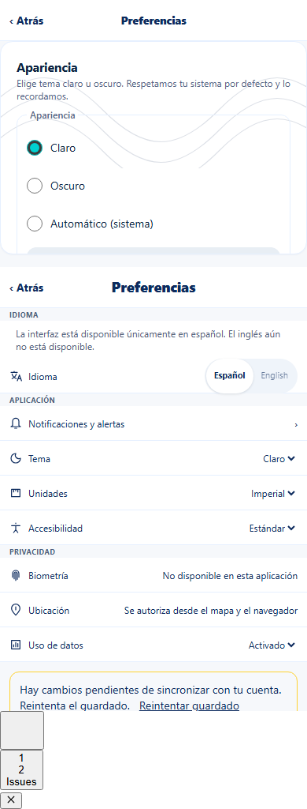
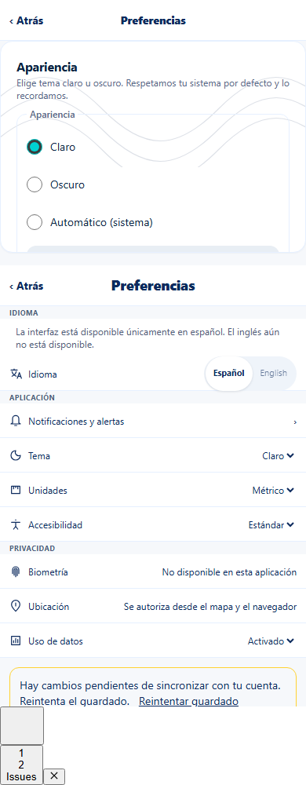
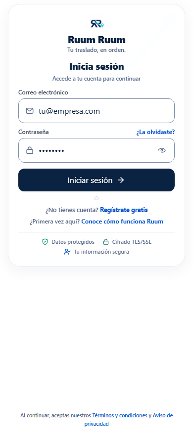
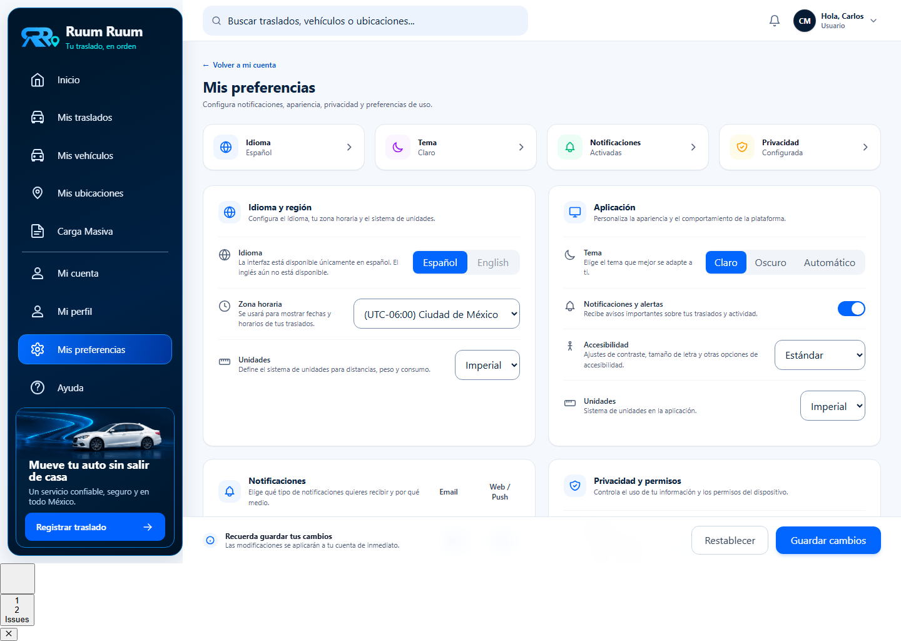
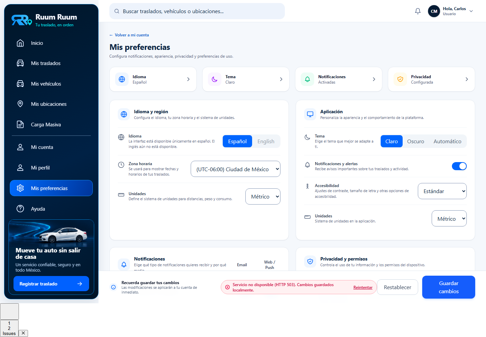
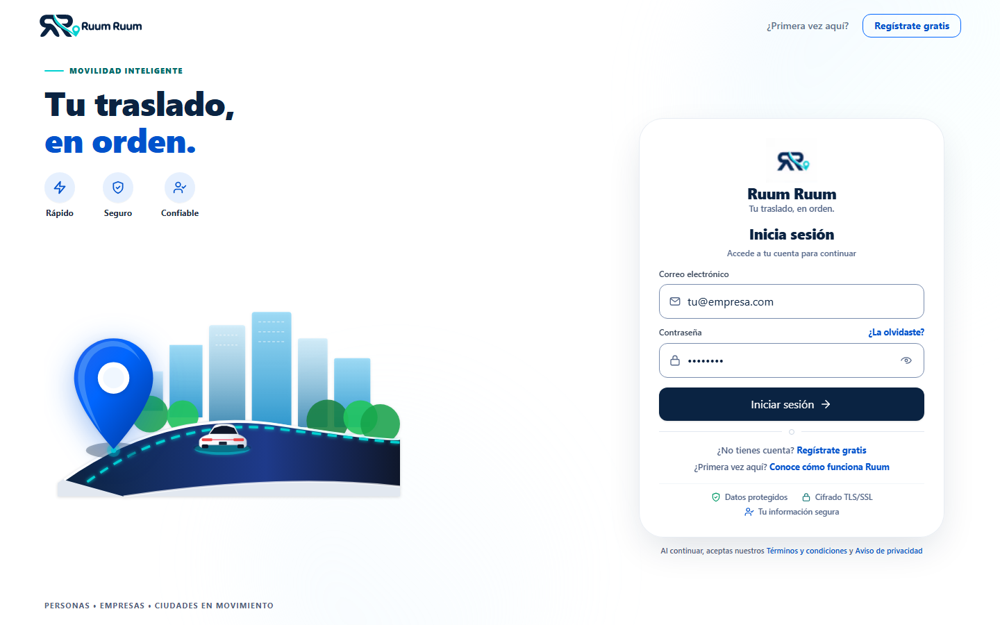
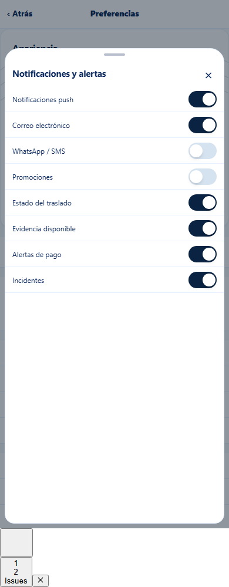

English deshabilitado con explicación previa; idioma efectivo español de México.
Decisión aprobada · Informe técnico · Resultados estructurados
| Ancho | lang · preferencias / acceso | Fallos axe de nombre/idioma | 503 / solicitudes posteriores exitosas | Idiomas enviados en preferencias generales |
|---|---|---|---|---|
| 390 | es-MX / es-MX | 0 | 1 / 1 | es, es |
| 1440 | es-MX / es-MX | 0 | 2 / 2 | es, es |
Los datos y los servicios son fixtures locales. Los reportes originales conservan las solicitudes y los resultados de axe; las pruebas de recarga, cambio de cuenta, 503 y reintento se detallan en el informe.






